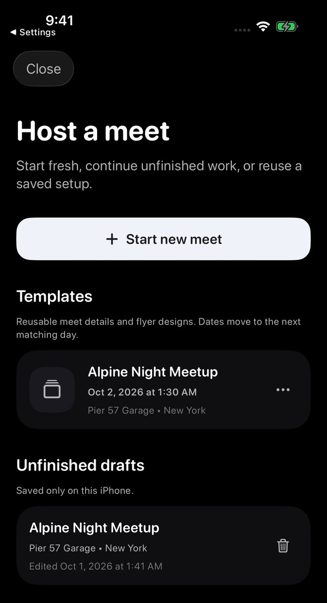
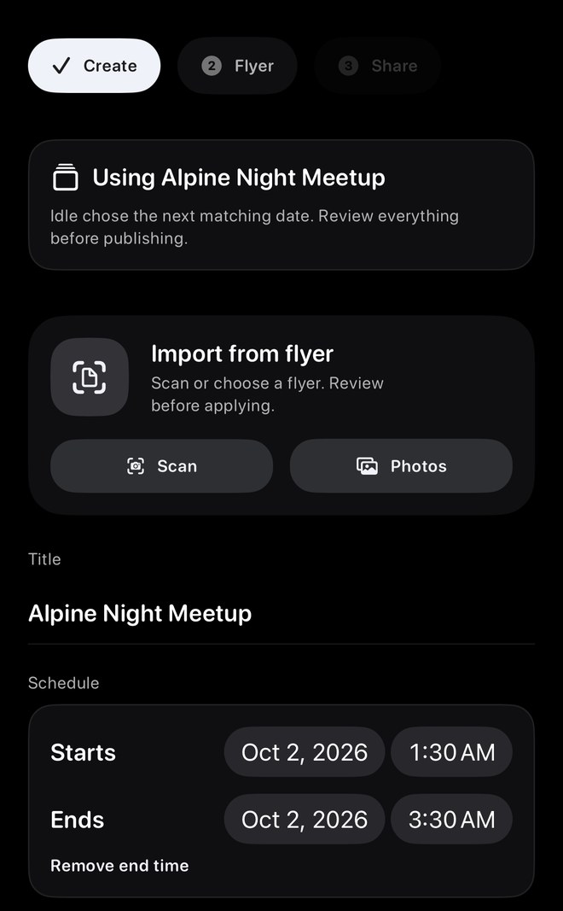
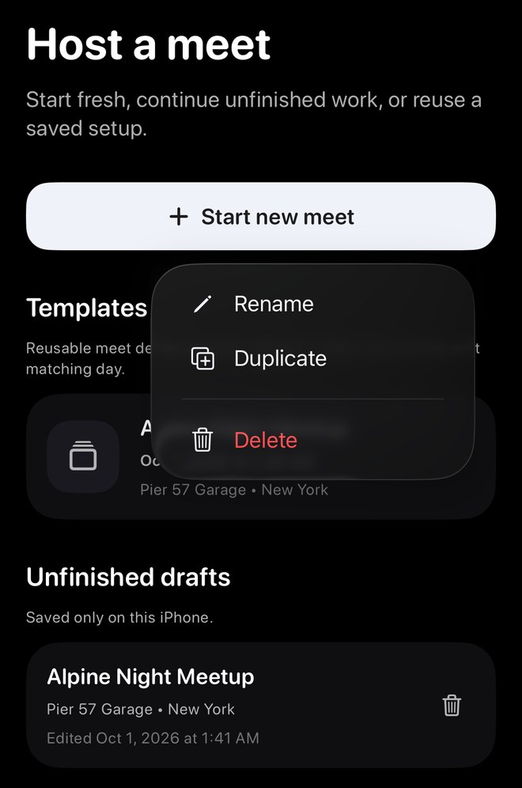

Screenshots show sample content from the Idle test drive in a prerelease build, version 1.3.0 (1), using Dark appearance and Alpine White. Your app may look different. Learn about the test drive.
Save a setup you want to reuse
- Prepare the meet details and flyer.
- Continue to the Share stage and choose Save as template. Host Tools also has a Save template entry for a hosted setup.
- Give the template a clear name and confirm the save.
After the local sample was saved, the Share stage displayed the template name plus Update template and Save as new template. Saving a template does not publish a new meet.

Find your saved template
Open Host. Saved setups appear under Templates, separately from Unfinished drafts.
Choose a template to start another meet from that setup. Templates created during a test drive stay on that iPhone. For templates saved to an account, check that you are using the same Idle account.

Review everything before publishing
- Select the template you want to use.
- Review the suggested date and local time, including any optional end time.
- Check the title, location, visibility, flyer, parking plan, ride-out plan, and other reused details.
- Publish only when the new meet is ready.
The reused sample showed a future start and end window. Always check the dates yourself rather than assuming a saved schedule is still right.

Manage saved templates
Open the template’s More actions menu for Rename, Duplicate, or Delete.
Use Update template in a setup linked to an existing template when you want to revise that saved setup, or Save as new template to keep a separate one.

Templates are not recurring meets
A template is a reusable starting point. It does not publish on a schedule, copy attendance, or create a live meet until you review the setup and publish it.
Troubleshooting
- Template is missingConfirm you are signed into the same Idle account that saved it.
- A group option changedGroup access is checked again when you reuse a template. Choose an eligible group or another visibility option.
- Date or time looks wrongReview the suggested future date and local time before publishing.
- Template will not loadTry again, or start a blank meet. A template problem should not stop you from hosting.
Contact support
Email support@idlemeets.com with the template name, what you tapped, and the exact message shown.